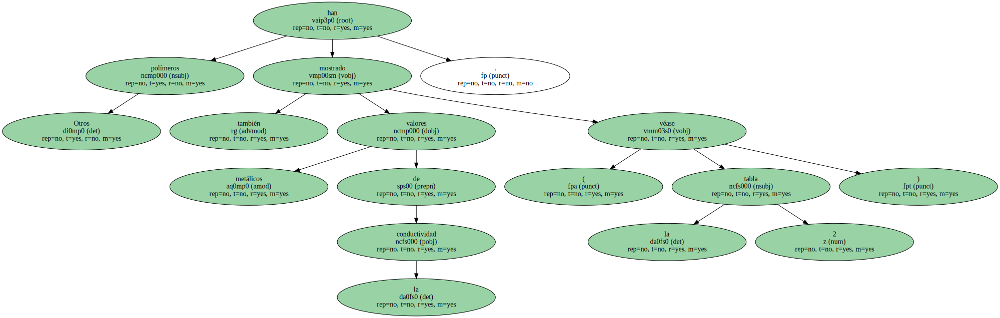
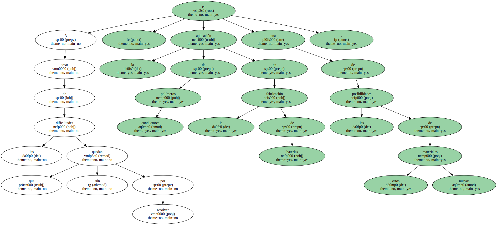
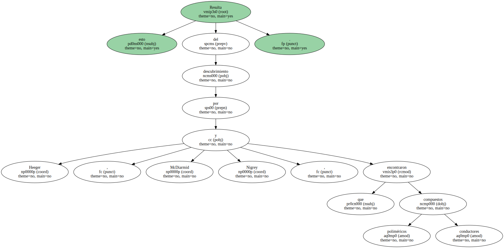
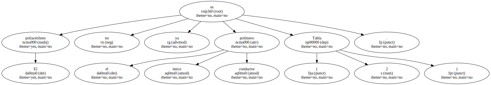
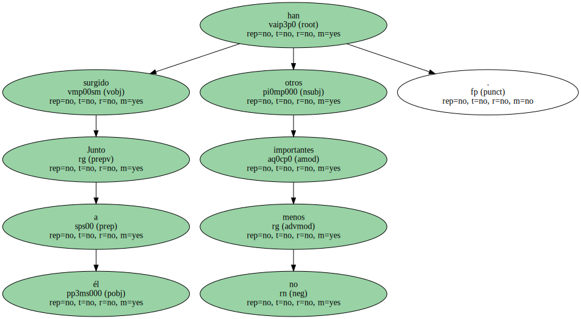
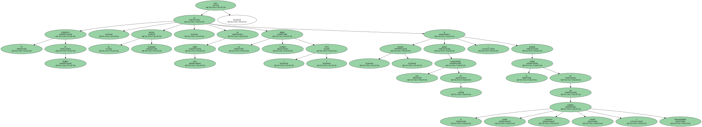
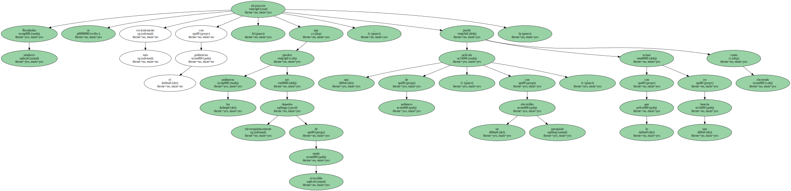

Por lo que respecta al problema de la baja solubilidad , que dificulta el proceso , Grubbs ha logrado llegar a poliacetilenos solubles mediante un enfoque químico distinto : la polimerización con apertura de ciclo de ciclooctatetraenos sustituidos.
Los sustituyentes que soporta ahora la cadena polimérica incrementan notablemente la solubilidad del polímero conductor , si bien al precio de una conductividad menor , del orden de 350.
Otros polímeros también han mostrado valores metálicos de la conductividad ( véase la tabla 2 ).
A pesar de las dificultades que aún quedan por resolver , la aplicación de polímeros conductores en la fabricación de baterías es una de las posibilidades de estos nuevos materiales.
Resulta esto del descubrimiento por Heeger , McDiarmid y Nigrey , que encontraron compuestos poliméricos conductores.
El poliacetileno no es ya el único polímero conductor ( Tabla 2 ).
Junto a él han surgido otros no menos importantes.
El polisulfuro de fenileno , aunque no conjugado , es en estado puro un excelente aislante ( 1016 ) pero al - doparlo - alcanza una conductividad de 1 y presenta la ventaja de ser el primer polímero conductor soluble y termomoldeable.
El polipirrol , por su parte , se obtiene dopado en una sola etapa por polimerización del pirrol electroquímicamente con BF4 - como contraión y es un polímero conductor de considerable estabilidad , tanto térmica como frente al aire.

Resultados similares se alcanzaron más recientemente con el politiofeno : que los polímeros pueden ser dopados electroquímicamente de modo reversible , con lo que una película de polímero , con un electrólito apropiado , puede actuar como electrodo en una batería.
